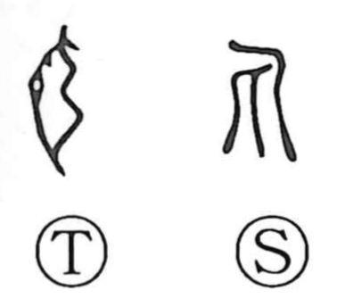

丸

Kun: maru, marui, marumeru | On: gan
round ・ pellet ・ projectile
Explanation
Shirakawa sees 丸 as a pictograph of a rounded missile set against a bowstring, ready to be loosed. From this image—the compact, drawn projectile once associated with the spring bow—the character naturally came to signify the very quality of roundness and, by extension, small round things. Hence its use for items shaped into pellets, as in pills (丸薬), and for motions that evoke rolling over and over (丸転). In older usage,弾丸 named the bow’s projectile and later came to mean a bullet, but the core idea remains the same: the succinct, complete, rounded form captured in everyday Japanese uses like maru and marui.